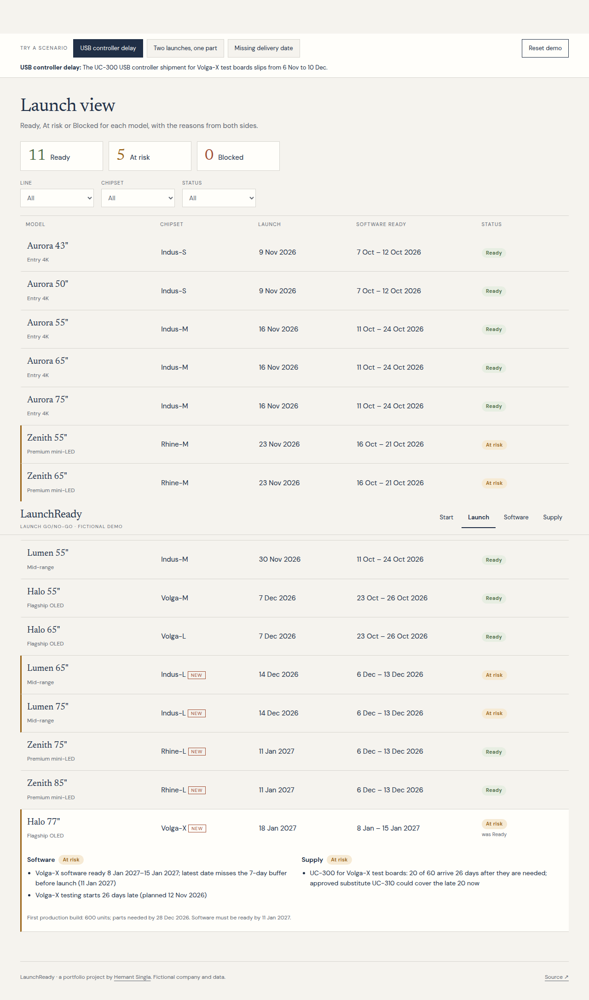

Will each TV launch on time?
A go/no-go tool that joins the two sides of a launch, software readiness and supply, so a supplier slip shows up as a launch risk the same day.
The problem
A supplier slips, or tickets pile up. Each fact is visible to someone. Procurement sees a late purchase order. A software lead sees testing start late. A launch manager hears both in different meetings. Nobody sees the chain: a late USB controller means fewer test boards, testing starts late, tickets are found later, and the software date slides past launch. Options exist (borrow stock, use an approved substitute, move the date), but each one touches the other side.
What it does
- 3views: Launch verdicts with reasons from both sides, a Software team view and a Supply view, with filters, working on mobile
- 3scenarios that recalculate everything with the tested logic: a supplier delay, two launches competing for one part, a delivery with no date
- 20automated tests, covering the rules, no double allocation, and every scenario and option

How the verdict works
Software, per chipset: testing starts when all code is in and test boards exist. The ready date is a range: the test window plus a stabilisation tail, or the time to clear open tickets by severity (critical 3–14 days, major 2–7, minor 1–3) at each team’s capacity, whichever is later. Supply, per model: parts are handed out in need-date order, and each unit only once. Rejected and undated deliveries are never counted. Launch: the worse of the two, with the reasons and numbers behind it.
The AI agent
When something changes, the agent investigates both sides with seven tools: lookups and what-if simulations that call the same tested logic as the app. It weighs moving stock, using the approved substitute, or moving the date, then proposes a plan with trade-offs, any remaining gap, and draft messages to owners. A person approves, assigns owners and marks items done. The agent can’t make up numbers: every quantity and date comes back from a tool. The demo replays real runs recorded during the build.
How it helps
| Person | Today | With LaunchReady |
|---|---|---|
| Software lead | Finds out boards are late when they don’t arrive | Sees the new test start the day the supplier slips |
| Planner / procurement | Sees a late PO, not which launch it threatens | Sees which delay moves a launch, and which stock can move safely |
| Launch manager | Rebuilds go/no-go by chasing both sides | One verdict per model with reasons; options checked before committing |
Supply control towers (e.g., Kinaxis, o9) are strong on allocation but see a launch as a demand date. Release hubs (e.g., Jira) are strong on tickets but know nothing about parts. The costly problems sit between them.
Where supply chain fits
| Area | In LaunchReady |
|---|---|
| Inventory | On-hand vs already allocated vs free, by warehouse; nothing promised twice |
| Procurement | POs with planned vs current dates, rejections, and an approved second source |
| Production planning | Test boards as a pilot build that gates everything after it; production parts 21 days before launch |
| S&OP | Demand vs supply per launch, with engineering readiness as a third constraint; scenarios as the what-if |
| Exception management | Only verdict-changing exceptions surface; the agent turns them into options and owners |
| Cost / service trade-offs | Each option’s service effect is explicit; cost of expediting and substitutes is on the backlog |
Limitations
Fictional data, and the baseline was designed so the scenarios show clear effects. There are no real integrations with Jira, an ERP or supplier portals, and data quality is assumed. The model is simplified: key parts only, no warehouse transfer times, no test-lab capacity, no costs. The thresholds are reasonable defaults, not validated ones. The agent is replayed, not live; its wording and choice of options can be wrong, which is why a person approves every plan. Still to validate with real users: how often parts delay testing, how long it takes today to get from “supplier slipped” to “owner assigned”, and whether teams would trust a computed verdict.